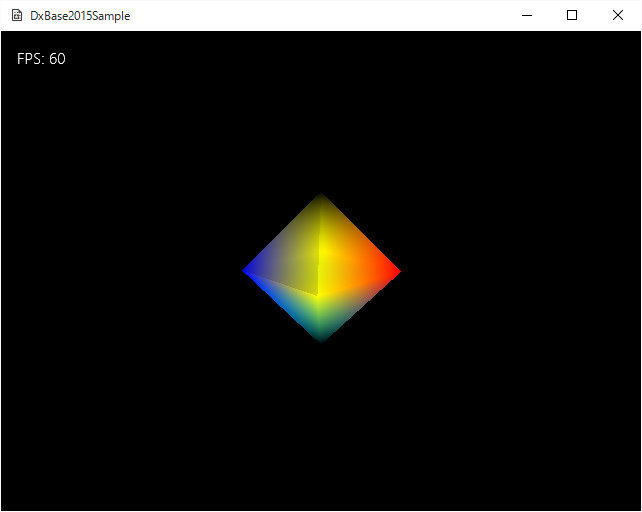

図Simple03a
中央で８面体が回転してます。今回は、頂点の型をVertexPositionNormalColor型を使用します。
cbuffer SimpleConstantBuffer : register(b0)
{
float4x4 Model : packoffset(c0);
float4x4 View : packoffset(c4);
float4x4 Projection : packoffset(c8);
float4 LightDir : packoffset(c12);
};
struct VertexShaderInput
{
float4 Position : SV_Position;
float3 Normal : NORMAL;
float4 Diffuse : COLOR0;
};
struct PixelShaderInput
{
float4 Position : SV_Position;
float3 Normal : NORMAL0;
float4 Diffuse : COLOR0;
};
#include "PRSimple3D.hlsli"
//--------------------------------------------------------------------------------------
// Vertex Shader
//--------------------------------------------------------------------------------------
PixelShaderInput main(VertexShaderInput input)
{
PixelShaderInput vertexShaderOutput;
float4 pos = input.Position;
pos.w = 1.0;
pos = mul(pos, Model);
pos = mul(pos, View);
pos = mul(pos, Projection);
vertexShaderOutput.Position = pos;
vertexShaderOutput.Normal = mul(float4(input.Normal, 1.0f), Model).xyz;
vertexShaderOutput.Diffuse = input.Diffuse;
return vertexShaderOutput;
}
#include "PRSimple3D.hlsli"
//--------------------------------------------------------------------------------------
// Pixel Shader
//--------------------------------------------------------------------------------------
float4 main(PixelShaderInput input) : SV_TARGET
{
//ライトの向きを得る
float3 LightDirection = normalize(float3(LightDir.xyz));
float3 InputNormal = normalize(input.Normal);
//ライトによるピクセルの色を決定
float4 LightColor = saturate(dot(InputNormal, LightDirection) + float4(0.7, 0.7, 0.7, 1.0));
//ライトの透明処理はなし
LightColor.a = 1;
//デフィーズ色とライト色を合成
return input.Diffuse * LightColor;
}
class GameObject : public Object, public SimpleInterface{
weak_ptr<GameStage> m_GameStgae;
Vector3 m_Scale;
Quaternion m_Quaternion;
Vector3 m_Position;
Matrix4X4 m_WorldMatrix;
//頂点バッファ
ComPtr<ID3D11Buffer> m_VertexBuffer;
//インデックスバッファ
ComPtr<ID3D11Buffer> m_IndexBuffer;
//頂点の数
UINT m_NumVertices;
//インデックスの数
UINT m_NumIndicis;
//メッシュの作成
void CreateCustomMesh();
public:
//中略
};
void GameObject::Create(){
//頂点を作成するための配列
vector<VertexPositionNormalTexture> vertices;
vector<uint16_t> indices;
//正8面体の作成
VertexUtil::CreateOctahedron(1.0f, vertices, indices);
//頂点を変更するための配列
vector<VertexPositionNormalColor> set_vertices;
for (auto V : vertices){
Color4 Col;
if (V.position.y > 0){
Col = Color4(1.0f, 1.0f, 0.0f, 0.0f);
}
else if (V.position.y < 0){
Col = Color4(0.0f, 1.0f, 1.0f, 0.0f);
}
else{
if (V.position.x == 0.0f){
Col = Color4(1.0f, 1.0f, 0.0f, 1.0f);
}
else if (V.position.x > 0.0f){
Col = Color4(0.0f, 0.0f, 1.0f, 1.0f);
}
else{
Col = Color4(1.0f, 0.0f, 0.0f, 1.0f);
}
}
set_vertices.push_back(
VertexPositionNormalColor(V.position, V.normal, Col)
);
}
//頂点バッファの作成（頂点は変更できない）
VertexUtil::CreateVertexBuffer(m_VertexBuffer, set_vertices);
//頂点数の設定
m_NumVertices = static_cast<UINT>(set_vertices.size());
//インデックスバッファの作成
VertexUtil::CreateIndexBuffer(m_IndexBuffer, indices);
//インデックス数の設定
m_NumIndicis = static_cast<UINT>(indices.size());
m_WorldMatrix.DefTransformation(m_Scale, m_Quaternion, m_Position);
}
void GameObject::Update(){
float ElapsedTime = App::GetApp()->GetElapsedTime();
Quaternion SpanQt;
SpanQt.RotationRollPitchYawFromVector(Vector3(0, ElapsedTime, 0));
m_Quaternion *= SpanQt;
m_WorldMatrix.DefTransformation(m_Scale, m_Quaternion, m_Position);
}
void GameObject::Draw(){
//ゲームステージが無効ならリターン
if (m_GameStgae.expired()){
return;
}
//デバイスの取得
auto Dev = App::GetApp()->GetDeviceResources();
auto pDx11Device = Dev->GetD3DDevice();
auto pID3D11DeviceContext = Dev->GetD3DDeviceContext();
//ステータスのポインタ
auto RenderStatePtr = Dev->GetRenderState();
auto Stage = m_GameStgae.lock();
auto ViewPtr = Stage->GetView();
//ビューからカメラを取り出す
auto PtrCamera = ViewPtr->GetCamera();
//カメラの取得
Matrix4X4 View, Proj;
View = PtrCamera->GetViewMatrix();
Proj = PtrCamera->GetProjMatrix();
//コンスタントバッファの設定
Simple3DConstantBuffer cb1;
//行列の設定(転置する)
cb1.Model = Matrix4X4EX::Transpose(m_WorldMatrix);
cb1.View = Matrix4X4EX::Transpose(View);
cb1.Projection = Matrix4X4EX::Transpose(Proj);
//ライトの設定
//ステージから0番目のライトを取り出す
auto PtrLight = ViewPtr->GetMultiLight()->GetLight(0);
cb1.LightDir = PtrLight->GetDirectional();
cb1.LightDir.w = 1.0f;
//コンスタントバッファの更新
pID3D11DeviceContext->UpdateSubresource(
CBSimple3D::GetPtr()->GetBuffer(), 0, nullptr, &cb1, 0, 0);
//ストライドとオフセット
UINT stride = sizeof(VertexPositionNormalColor);
UINT offset = 0;
//頂点バッファの設定
pID3D11DeviceContext->IASetVertexBuffers(
0, 1, m_VertexBuffer.GetAddressOf(), &stride, &offset);
//インデックスバッファのセット
pID3D11DeviceContext->IASetIndexBuffer(m_IndexBuffer.Get(), DXGI_FORMAT_R16_UINT, 0);
//描画方法（3角形）
pID3D11DeviceContext->IASetPrimitiveTopology(D3D11_PRIMITIVE_TOPOLOGY_TRIANGLELIST);
//半透明処理
pID3D11DeviceContext->OMSetBlendState(
RenderStatePtr->GetAlphaBlendEx(), nullptr, 0xffffffff);
//デプスステンシルは使用する
pID3D11DeviceContext->OMSetDepthStencilState(RenderStatePtr->GetDepthDefault(), 0);
//シェーダの設定
pID3D11DeviceContext->VSSetShader(VSSimple3D::GetPtr()->GetShader(), nullptr, 0);
pID3D11DeviceContext->PSSetShader(PSSimple3D::GetPtr()->GetShader(), nullptr, 0);
//インプットレイアウトの設定
pID3D11DeviceContext->IASetInputLayout(VSSimple3D::GetPtr()->GetInputLayout());
//コンスタントバッファの設定
ID3D11Buffer* pConstantBuffer = CBSimple3D::GetPtr()->GetBuffer();
pID3D11DeviceContext->VSSetConstantBuffers(0, 1, &pConstantBuffer);
pID3D11DeviceContext->PSSetConstantBuffers(0, 1, &pConstantBuffer);
//レンダリングステート
pID3D11DeviceContext->RSSetState(RenderStatePtr->GetCullFront());
//描画
pID3D11DeviceContext->DrawIndexed(m_NumIndicis, 0, 0);
//レンダリングステート
pID3D11DeviceContext->RSSetState(RenderStatePtr->GetCullBack());
//描画
pID3D11DeviceContext->DrawIndexed(m_NumIndicis, 0, 0);
//後始末
Dev->InitializeStates(RenderStatePtr);
}
void GameStage::Update(){
//ビューの変化
m_View->Update();
//オブジェクトの変化
for (auto Obj : m_GameObjectVec){
Obj->Update();
}
auto fps = App::GetApp()->GetStepTimer().GetFramesPerSecond();
wstring FPS(L"FPS: ");
FPS += Util::UintToWStr(fps);
//文字列の変化
m_StringSprite->SetText(FPS);
m_StringSprite->Update();
}